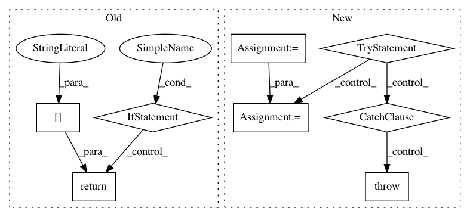

09cbb9f2bb00eb5d3bd1dad15a437bed6822e468,luminoth/models/base/base_network.py,BaseNetwork,get_trainable_vars,#BaseNetwork#,190
Before Change
][0]
finetune_num_layers = self._config.get("finetune_num_layers")
if not finetune_num_layers:
return all_variables
else:
return all_variables[
last_idx - finetune_num_layers * 2:last_idx
]
After Change
return all_variables
// Get the index of the first trainable variable
var_iter = enumerate(v.name for v in all_variables)
try:
index = next(i for i, name in var_iter if fine_tune_from in name)
except StopIteration:
raise ValueError(
""{}" is an invalid value of fine_tune_from for this "
"architecture.".format(fine_tune_from)
)
return all_variables[index:]
In pattern: SUPERPATTERN
Frequency: 3
Non-data size: 8
Instances
Project Name: tryolabs/luminoth
Commit Name: 09cbb9f2bb00eb5d3bd1dad15a437bed6822e468
Time: 2017-10-27
Author: dekked@gmail.com
File Name: luminoth/models/base/base_network.py
Class Name: BaseNetwork
Method Name: get_trainable_vars
Project Name: streamlit/streamlit
Commit Name: c786913462decebc4157ac3e8d2ec08303021adc
Time: 2018-07-02
Author: adrien.g.treuille@gmail.com
File Name: lib/streamlit/config.py
Class Name:
Method Name: get_s3_option
Project Name: streamlit/streamlit
Commit Name: cf2e5c02c448c6f25136a4cd1b89e7f0ba1a3d37
Time: 2018-07-06
Author: adrien.g.treuille@gmail.com
File Name: lib/streamlit/config.py
Class Name:
Method Name: get_s3_option